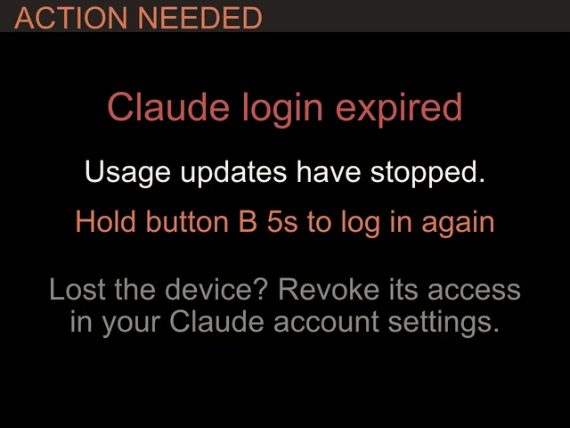
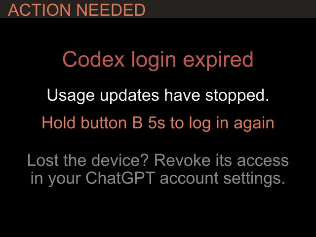

Troubleshooting
Troubleshooting.
What each message means and which button to hold.
Build yours
From $119


On the screen
Messages and fixes.
| It says | Do this |
|---|---|
| Claude login expired | Hold B about 7 seconds (orange screen at 5 seconds, keep holding) and paste a fresh token from claude setup-token. Wi-Fi and names are kept. |
| Token rejected (one account) | Only that card stops. Hold B about 7 seconds and paste fresh tokens; a two-account device asks for both. |
| Codex login expired | Hold B about 7 seconds and sign in again on the device. Wi-Fi is kept. |
| Sign-in code expired | Codes last 15 minutes. Press B for a new one. |
| Claude + Codex missing from setup | Leave it plugged in on Wi-Fi for a while so it can update, then try again. |
Screens
What they look like.


Buttons
A, B and C.
- Hold AThe Status screen: firmware version, Wi-Fi and why the last check failed, if it did.
- Hold B about 7 secondsSign in again. On Claude and 2 Claude accounts it reopens the setup page; on Codex and Claude + Codex it signs in to ChatGPT again.
- Hold C about 7 secondsFactory reset. Clears Wi-Fi, tokens and names, then starts setup.
FAQ
Questions.
It will not join my Wi-Fi.
It needs 2.4 GHz with a WPA2 password. It does not join 5 GHz-only or WPA3-only networks. Most home routers broadcast a compatible 2.4 GHz network.
The setup page does not pop up on my phone.
Open http://192.168.4.1 in your browser while joined to the codeMeter Wi-Fi.
The clock shows the wrong time.
The time zone comes from ip-api.com. If a network filter such as an ad blocker blocks it, allow ip-api.com.
How do I switch from Claude to Codex?
Hold C about 7 seconds to factory reset, then set it up again and pick OpenAI Codex. No reflashing.